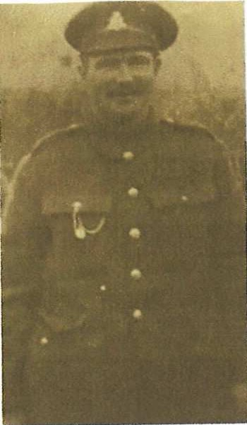

1915 to 1919, in eight chapters, at home and away
The Quiet Soldier
The life of Henry John Bowles: farm hand, soldier and father. Told through the records he left, the places he stood, and a voice imagined for him.

How to read what you see
Real papers, maps and photographs from the time.
From our own family's papers and photographs.
Not Henry himself, but men just like him.
Imagined from the records, and always marked.